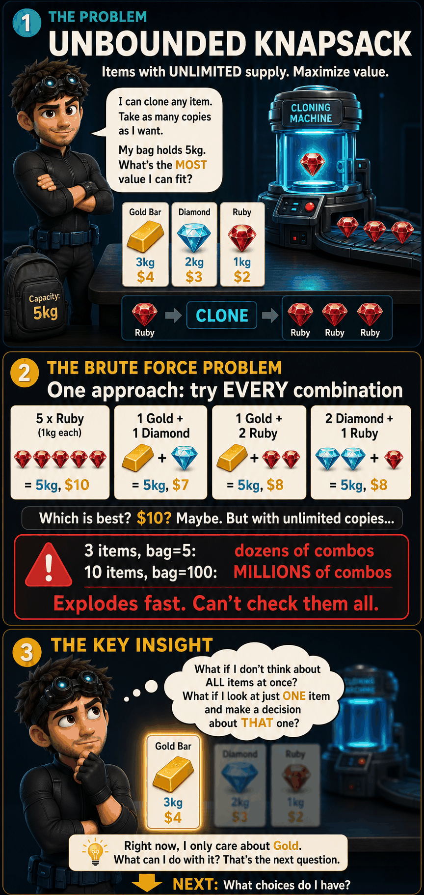
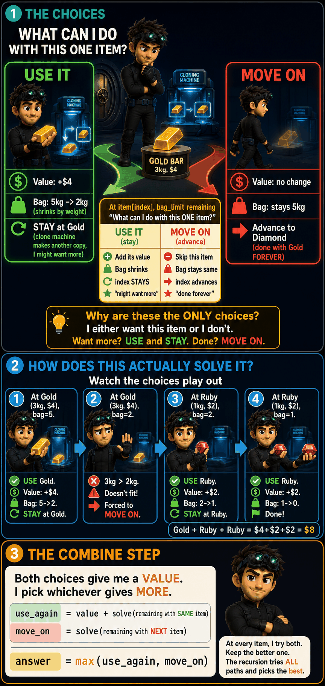
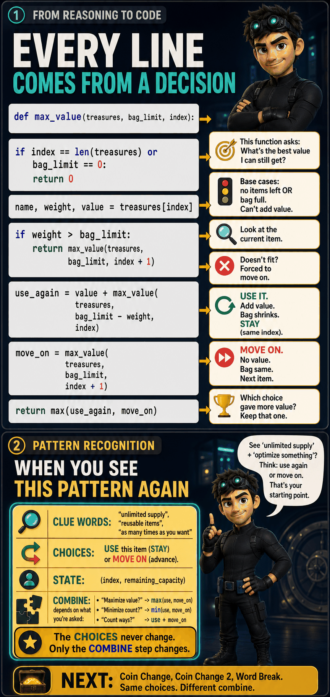
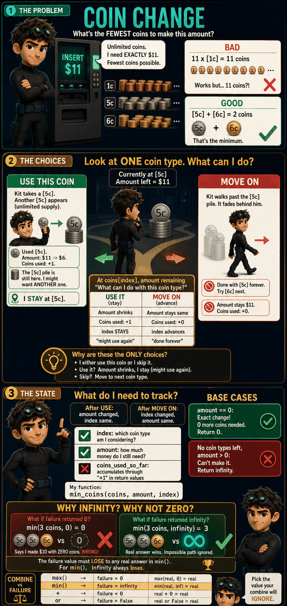
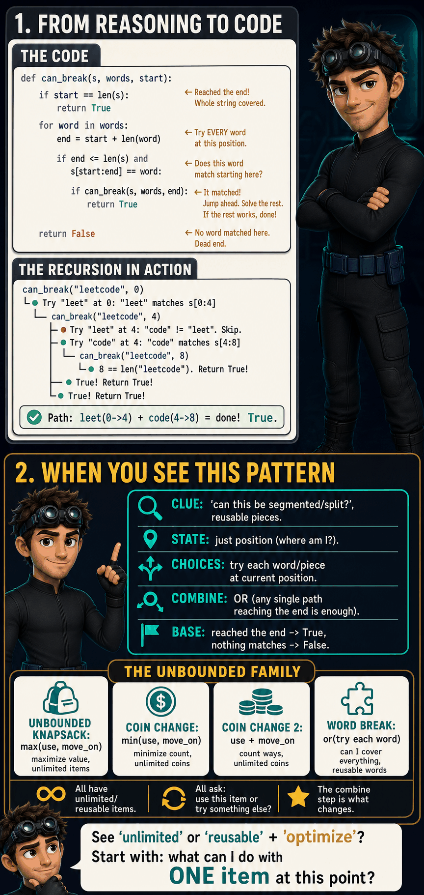

The Problem

Unbounded Knapsack
Same as 0/1 knapsack (maximize value within a weight limit), but each item can be used unlimited times. You have an infinite supply of every item.
0/1: Take it (once) or skip it. Both advance to the next item.
Unbounded: Take it again (stay, might take more) or move on. Only "move on" advances.
Unbounded: Take it again (stay, might take more) or move on. Only "move on" advances.
The Choices

Take Again or Move On
At each item, you have two options:
TAKE AGAIN
Add the value, reduce capacity. Stay at the same item (might take it again).
MOVE ON
Leave this item forever. Advance to the next item. Can't come back.
| 0/1 Knapsack | Unbounded Knapsack | |
|---|---|---|
| Take | index + 1 (advance) | index (STAY) |
| Skip/Move on | index + 1 (advance) | index + 1 (advance) |
| Both advance? | Yes | No, only move on |
The Recursion Tree

The "stay" branch creates more branches than 0/1 (because you can keep taking the same item). But subproblems still overlap: the same (index, capacity) pair appears in multiple branches. Memoize with
(index, bag_limit) to avoid re-solving.
Base Cases + Code

The Recursion
def max_value(treasures, bag_limit, index):
if index == len(treasures) or bag_limit == 0:
return 0
name, weight, value = treasures[index]
if weight > bag_limit:
return max_value(treasures, bag_limit, index + 1)
take_again = value + max_value(
treasures,
bag_limit - weight,
index) # STAY at same item
move_on = max_value(
treasures,
bag_limit,
index + 1)
return max(take_again, move_on)
One line is different from 0/1:
index instead of index + 1 in the take branch. That single change turns "use once" into "use unlimited times."
The Tabulation (1D)
def max_value(treasures, bag_limit):
dp = [0] * (bag_limit + 1)
for name, weight, value in treasures:
for cap in range(weight, bag_limit + 1):
dp[cap] = max(dp[cap], dp[cap - weight] + value)
return dp[bag_limit]
Loop direction: inner loop goes LEFT to RIGHT. In 0/1, it goes right to left to prevent reuse. Here, left to right ALLOWS reuse:
dp[cap - weight] might already include this item from an earlier iteration.
The Unbounded Family
UNBOUNDED KNAPSACK (parent)
At each item: take again (stay) or move on. Maximize value. Items reusable.
At each item: take again (stay) or move on. Maximize value. Items reusable.
1 Coin Change (Minimum Coins)
▶


THE KEY IDEA
Same "use again or move on" choice. Combine with min() instead of max(). Each coin used adds 1 to the count. Base case: amount = 0 returns 0 coins, no coins left returns infinity.def coin_change(coins, amount):
dp = [float('inf')] * (amount + 1)
dp[0] = 0
for coin in coins:
for a in range(coin, amount + 1):
dp[a] = min(dp[a], dp[a - coin] + 1)
if dp[amount] == float('inf'):
return -1
return dp[amount]2 Coin Change 2 (Count Combinations)
▶

THE KEY IDEA
Same choices. Combine with + (count ways). Outer loop = coins to count COMBINATIONS (not permutations). {1,2} and {2,1} are the same combination.def count_ways(coins, amount):
dp = [0] * (amount + 1)
dp[0] = 1
for coin in coins:
for a in range(coin, amount + 1):
dp[a] += dp[a - coin]
return dp[amount]3 Word Break
▶

THE INSIGHT
Words are reusable items. String length is the capacity. At each position, try every word that starts there. If it matches and the prefix was valid, the new position is valid too.def word_break(s, word_dict):
words = set(word_dict)
dp = [False] * (len(s) + 1)
dp[0] = True
for end in range(1, len(s) + 1):
for start in range(end):
if dp[start] and s[start:end] in words:
dp[end] = True
break
return dp[len(s)]The Pattern
Two Knapsack Families, One Core Idea
| 0/1 Knapsack | Unbounded Knapsack | |
|---|---|---|
| Supply | Each item once | Unlimited copies |
| Take branch | index + 1 | index (stay) |
| 1D loop | Right to left | Left to right |
| Children | Subset Sum, Partition, Count, Min Diff, Target Sum, Given Diff | Coin Change, Coin Change 2, Word Break |
The choice at the core of BOTH families: at each item, do I use it or not?
The only question is: after using it, can I use it again?
0/1 says no (advance). Unbounded says yes (stay).
The only question is: after using it, can I use it again?
0/1 says no (advance). Unbounded says yes (stay).